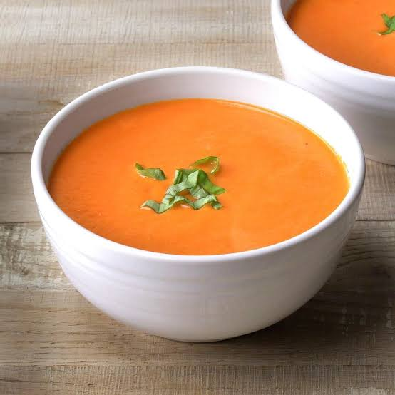

Soup

Description
Tomato soup is a classic, comforting dish made from blended ripe tomatoes, broth, and savory seasonings. It is
loved worldwide for its smooth texture and rich, warming flavor, making it a perfect meal on its own or paired
with grilled cheese.
Ingredients
- Tomatoes
- Onion and garlic
- Olive oil or butter
- Broth
- Herbs
Steps
- Sauté the aromatics by heating butter or oil in a pot and cooking the chopped onion and garlic until sof
- Add the tomatoes and broth to the pot, bring the mixture to a boil, and let it simmer for about fifteen minutes.
- Blend the soup using an immersion blender until it reaches a smooth and consistent texture
- Season and finish by stirring in salt, pepper, herbs, and a splash of cream if desired, then serve hot
Home